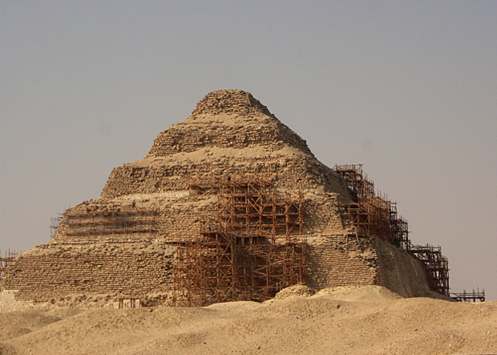
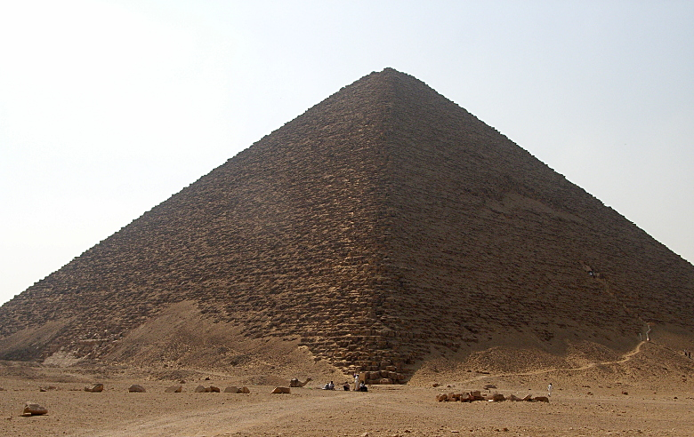
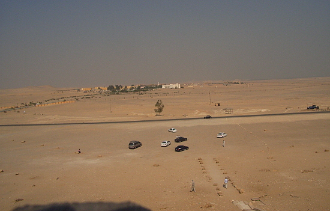
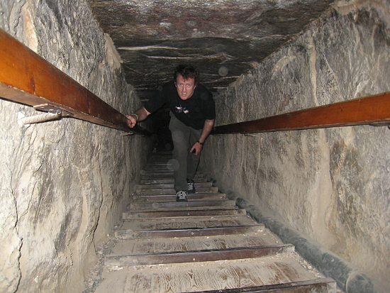
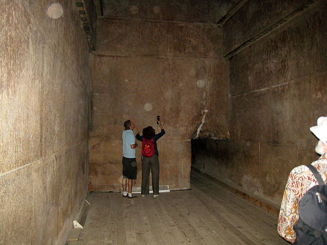
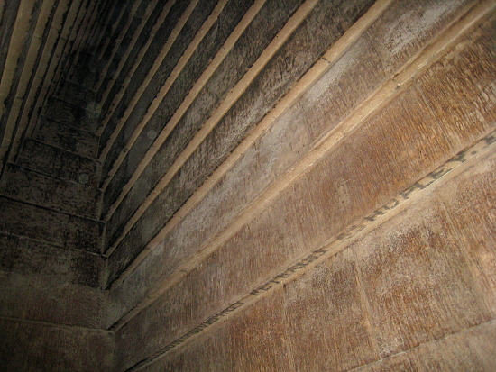
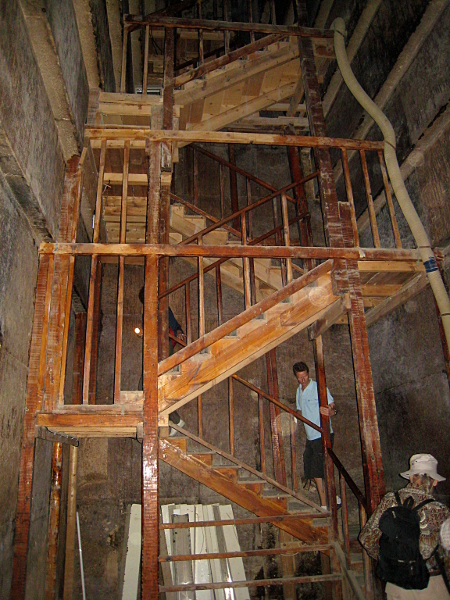
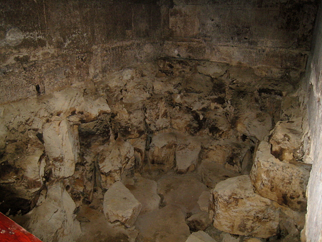

Egypt Trav-E-Log ©
Saqqara and Dahshur Pyramids
|  |
| back: Giza |
The Saqqara Pyramids were the very first, followed closely by the Dahshur Pyramids. Earlier tombs were rectangular structures with a flat roof. 2630 BCE |
7 Nov 2010, Cairo, Egypt
-------------------------------------------
Pyramids in Egypt are the burial grounds for ancient rulers. The Saqqara are the original, so-called step pyramids, and are located about 10 miles South of Giza. Scaffolding has been erected to aid in restoration/preservation efforts. From there we traveled another 8 miles to the Red Pyramid at Dahshur, constructed some 50 years later. It is the first geo-
metrically correct pyramid. This pyramid was open for a self guided tour.
-------------------------------------------
 |
| Edge view of the Red Pyramid at Dahshur, path leading to the entrance on one face, while the other face is in sunlight. 2575 BCE |
| View from the pyramid entrance. |
 |
 |
This is the steep, narrow passageway leading from the entrance to the three chambers in the center of the pyramid, and that's my travel mate. He shared his photos of the interior with me, as well as taxi for the duration of the day. |
| First chamber in the Red Pyramid. Other guests are looking at the ceiling construction technique. Note the size of passageway leading to the next chamber. |
 |
 |
Photo of the ceiling construction technique. An arched ceiling with keystone had not been invented yet. (Try to ignore the graffiti.) |
| Second chamber & staircase leading to the burial chamber. Even with the ductwork pumping air, it was pretty stuffy inside. |
 |
 |
The floor of the burial chamber has been totally dug up, apparently in an unsuccessful attempt to find a secret chamber, and more treasure. |
Question? Contact me at the Juno.com address Dancer2SEAsia.
Life is Good When You Travel! Turn off the TV and start planning your next trip!